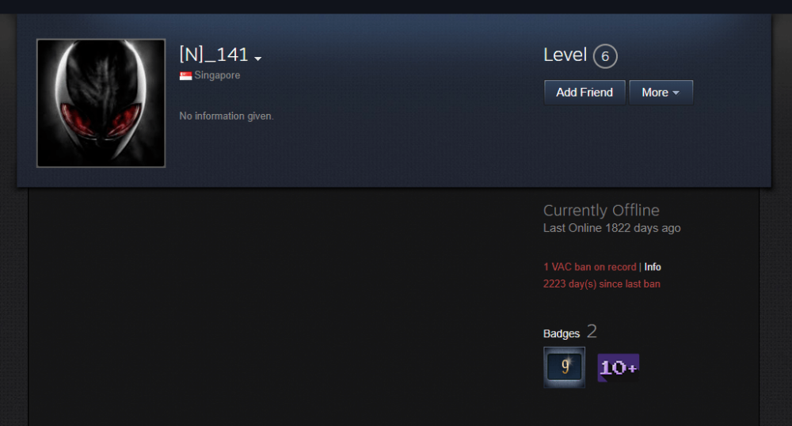
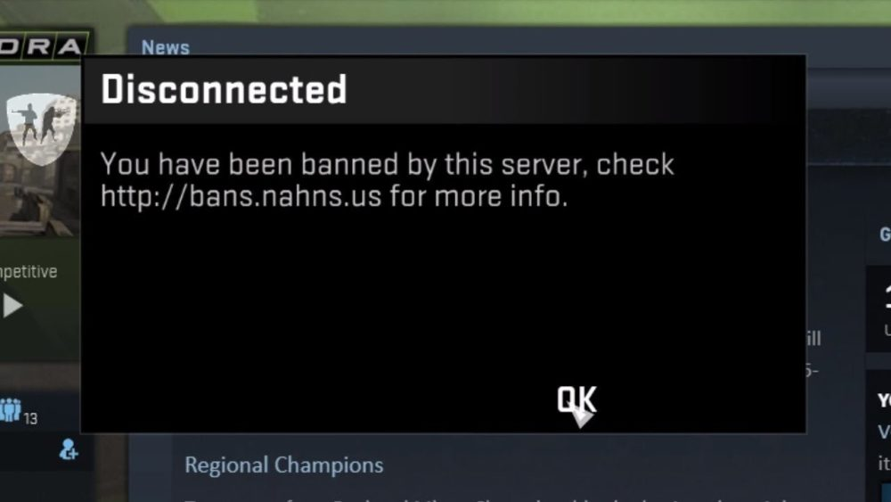

Does CSGO Ban Players by IP?
VAC Bans
If you are caught cheating in CS:GO, Valve (the company that created CS:GO) will permanently ban you from their servers. This is known as a VAC ban.
VAC bans are permanent and always issued on the account level. Not on the IP.
Community Server Bans
When you join a community server, the admins of that server have full rights to ban you from their server for any reason (not just for cheating). Almost all community server bans are applied on the account level, too. Its extremely rare for people to be banned by IP but it's not impossible.
If you get banned on a community server, you will usually receive a message with a link where you can find more info about the ban. Sometimes you can even contact the owners.
Why Valve doesn't use IP bans?
Because its ineffective:
- There can be multiple players using the same IP which will result in banning wrong players;
- IPs can be easily changed.